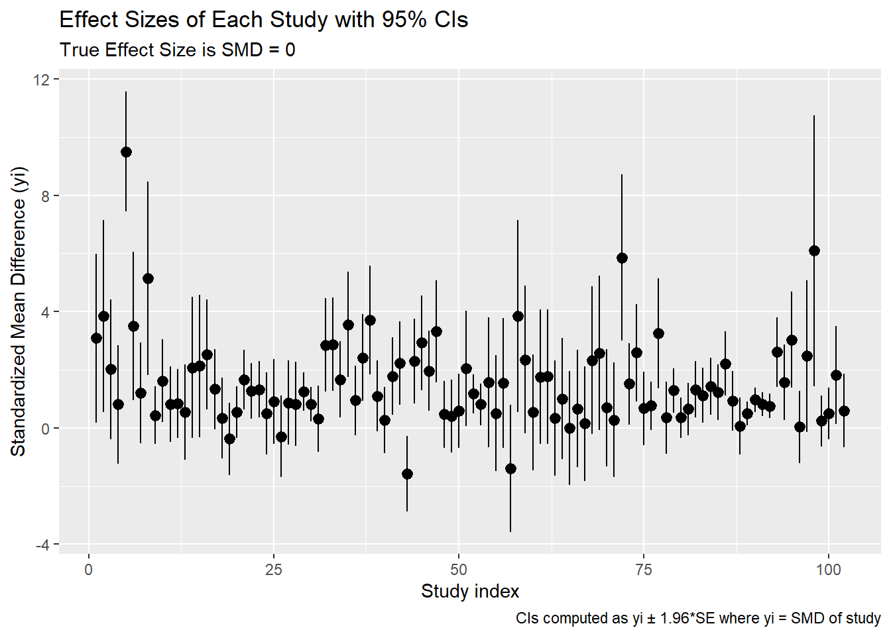

plant functional types are sets of species with similar responses to the environment and with similar effects on ecosystem functioning ==> need reference here
The dataset consists of 102 studies with 20 variables. Eleven are numeric variables and nine are character variables. These studies compared above and below-ground biomass (measured in grams) of plants exposed to ambient CO2 levels (control group) versus elevated CO2 levels (treatment group).
Research question:
Research question: Determine if there is an overall difference between in above and below-ground biomass of plants exposed to C02 levels (control group) versus elevated C02 levels (treatment group).
Intended Audience:
Audience: - example for conducting meta-analysis
package 'dplyr' successfully unpacked and MD5 sums checked
Warning: cannot remove prior installation of package 'dplyr'
Warning in file.copy(savedcopy, lib, recursive = TRUE): problem copying
C:\Users\liana\AppData\Local\R\win-library\4.5\00LOCK\dplyr\libs\x64\dplyr.dll
to C:\Users\liana\AppData\Local\R\win-library\4.5\dplyr\libs\x64\dplyr.dll:
Permission denied
Warning: restored 'dplyr'
The downloaded binary packages are in
C:\Users\liana\AppData\Local\Temp\Rtmp2PzdLb\downloaded_packages
package 'ggplot2' successfully unpacked and MD5 sums checked
The downloaded binary packages are in
C:\Users\liana\AppData\Local\Temp\Rtmp2PzdLb\downloaded_packages
package 'metadat' successfully unpacked and MD5 sums checked
The downloaded binary packages are in
C:\Users\liana\AppData\Local\Temp\Rtmp2PzdLb\downloaded_packages
package 'meta' successfully unpacked and MD5 sums checked
The downloaded binary packages are in
C:\Users\liana\AppData\Local\Temp\Rtmp2PzdLb\downloaded_packages
package 'metafor' successfully unpacked and MD5 sums checked
The downloaded binary packages are in
C:\Users\liana\AppData\Local\Temp\Rtmp2PzdLb\downloaded_packages
package 'knitr' successfully unpacked and MD5 sums checked
The downloaded binary packages are in
C:\Users\liana\AppData\Local\Temp\Rtmp2PzdLb\downloaded_packages
package 'gt' successfully unpacked and MD5 sums checked
The downloaded binary packages are in
C:\Users\liana\AppData\Local\Temp\Rtmp2PzdLb\downloaded_packages
Warning: package 'ggplot2' was built under R version 4.5.2
Warning: package 'metadat' was built under R version 4.5.2
Warning: package 'meta' was built under R version 4.5.2
Warning: package 'metafor' was built under R version 4.5.2
Warning: package 'gt' was built under R version 4.5.2
Data Source and Dictionary
This dataset comes from the metadat package, and the original study was conducted by Curtis, et. al. The article, Studies on the Effects of Elevated CO2 Levels on Woody Plant Mass, can be found here: https://go.gale.com/ps/i.do?id=GALE%7CA54994046&sid=googleScholar&v=2.1&it=r&linkaccess=fulltext&issn=00129658&p=AONE&sw=w&userGroupName=sailor_main&aty=ip#:~:text=The%20increasingly%20large%20body%20of%20studies%20in,been%20introduced%20to%20ecology%20(Gurevitch%20et%20al.
Data Dictionary
Data dictionary comes from :
Variable Name
Variable Definition
id
observation number
paper
paper number
genus
name of species
species
name of species
fungrp
plant functional group
co2.ambi
ambient CO2 level control group
co2.elev
elevated CO2 level for treatmet group
units
units for C02 exposure levels
time
maximum length of time days of C02 exposure
pot
growing methods
method
CO2 exposure facility
stock
planting stock code
xtrt
interacting treatment code
level
interaction treatment level
m1i
mean plant mass under elevated CO2 level for treatment group
sd1i
standard deviation of plant mass under elevated CO2 level for treatment group
n1i
number of observations under elevated CO2 level for treatment group
m2i
mean plant mass under ambient CO2 level for control group
sd2i
standard deviation of plant mass under ambient CO2 level for control group
n2i
number of observations under ambient CO2 level for control group
Snapshot into Top and Bottom of Data
# loading in datametadata <- metadat::dat.curtis1998# check for missing valuessum(is.na((metadata)))
# yi = effect size of each study?# vi = variance of each study?mod_summ %>%gt() %>%tab_header(title ="Moderator Summary by Functional Group and Method") %>%fmt_number(columns =c(mean_yi, mean_vi), decimals =3)
Moderator Summary by Functional Group and Method
fungrp
method
k
mean_yi
mean_vi
ANGIO
GH
58
1.314
0.780
GYMNO
GC
18
1.158
0.245
ANGIO
GC
13
2.565
1.258
ANGIO
OTC
7
2.142
0.757
GYMNO
GH
4
2.326
1.954
N2FIX
GC
2
1.207
0.579
# Mean Difference# ===== calculates MD for each studyMD_results <-metacont(n1i, m1i, sd1i, n2i, m2i, sd2i, sm ="MD", data = metadata)
Warning: Ratio of largest to smallest sampling variance extremely large. May
not be able to obtain stable results.
# Standardized Mean Difference# ====== calculates SMD for each studySMD_results <-metacont(n1i, m1i, sd1i, n2i, m2i, sd2i, sm ="SMD", data = metadata)summary(SMD_results)
ggplot(effect_size_dat, aes(x = yi)) +geom_histogram() +labs(title ="Distribution of Standardized Mean Differences (yi)",subtitle ="Computed via metafor::escalc with measure='SMD'",x ="Standardized Mean Difference (yi)",y ="Count",caption ="Source: metadat::dat.curtis1998; Methods: metafor, dplyr, ggplot2" )
`stat_bin()` using `bins = 30`. Pick better value `binwidth`.
Effect Size (Mean) Compared to Time Across Funtional Groups
ggplot(effect_size_dat, aes(x = time, y = yi)) +geom_point(alpha =0.7) +# scales = free_y means only x's are fixedfacet_wrap(~ fungrp, scales ="free_y") +labs(title ="Effect Size vs. Time",subtitle ="Comparing Relations Across Functional Groups",x ="Time",y ="Standardized Mean Difference (yi)",caption ="SMD = Standardized Mean Difference" )
Confidence Intervals of Each Study
# making data frame of confidence intervalsci_dat <- effect_size_dat %>%mutate(se =sqrt(vi),ci_lo = yi -1.96* se,ci_hi = yi +1.96* se,study_id =row_number() )ggplot(ci_dat, aes(x = study_id, y = yi, ymin = ci_lo, ymax = ci_hi)) +geom_pointrange() +labs(title ="Effect Sizes of Each Study with 95% CIs",subtitle ="True Effect Size is SMD = 0",x ="Study index",y ="Standardized Mean Difference (yi)",caption ="CIs computed as yi ± 1.96*SE where yi = SMD of study" )

Conclusion/Summary:
The biomass of woody plants is higher for elevated CO2 levels compared to the biomass of woody plants for ambient CO2 levels.
Functions used in data analysis:
From dyplr:
From ggplot: geom_histogram, geom_pointrange, geom_point